25 Production-Ready Posts & Graphics (US-India Cross-Border AI-RCM Series Included)
✓ Scheduled in Buffer
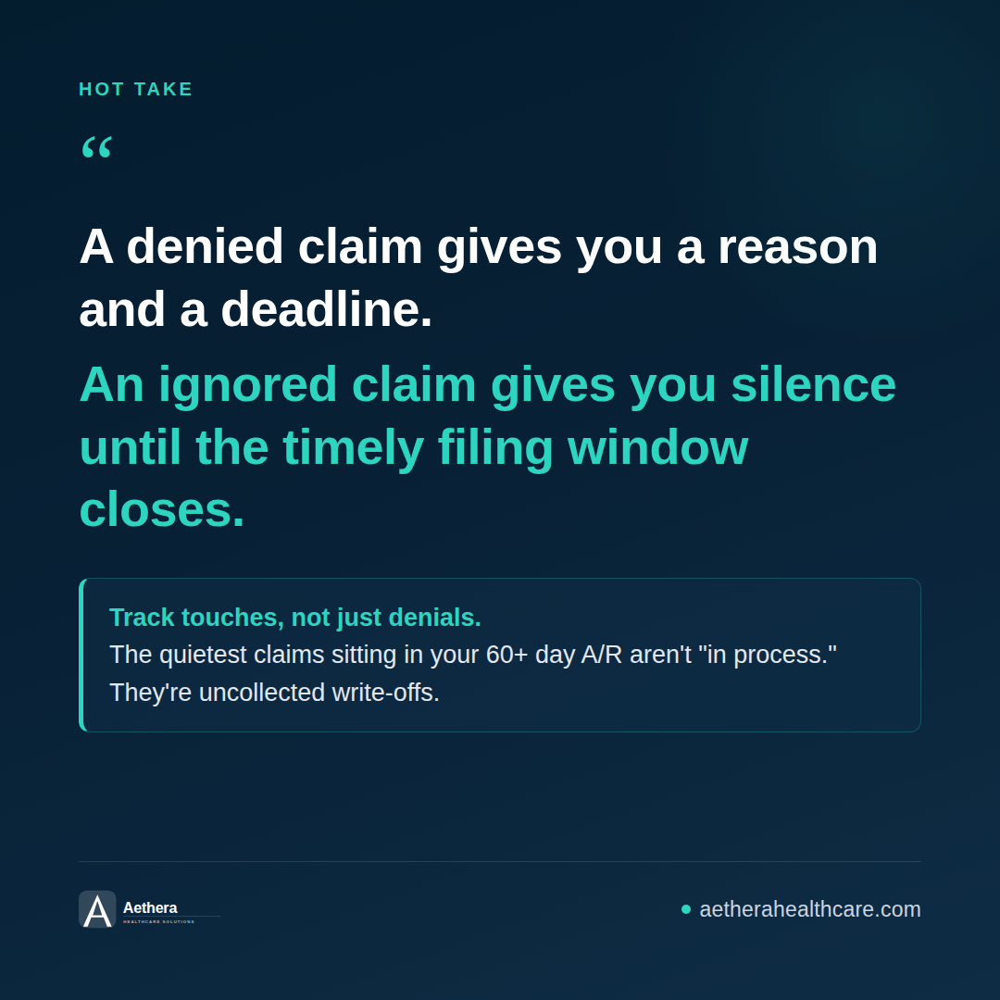
Monday: The Danger of Ignored Claims (Hot Take)
The most dangerous claims aren’t the ones that get denied.
They’re the ones that get ignored.
When a claim is denied, you get a CARC code, a reason, and a clear appeal clock. It forces action.
But ignored claims? They sit quietly in the 60–90+ day aging bucket. No denial on file. No status update. Just an overworked billing team hoping the payer is "still processing it."
Before anyone notices, the payer’s 90-day timely filing or appeal window slams shut. The revenue is gone forever.
Denials are an operational problem. Stagnant A/R is a silent write-off.
Track touches, not just denials.
What percentage of your total A/R is currently sitting past 60 days with zero payer touchpoints?
#MedicalBilling #RevenueCycleManagement #HealthcareFinance #PracticeManagement #HealthOps
✓ Scheduled in Buffer
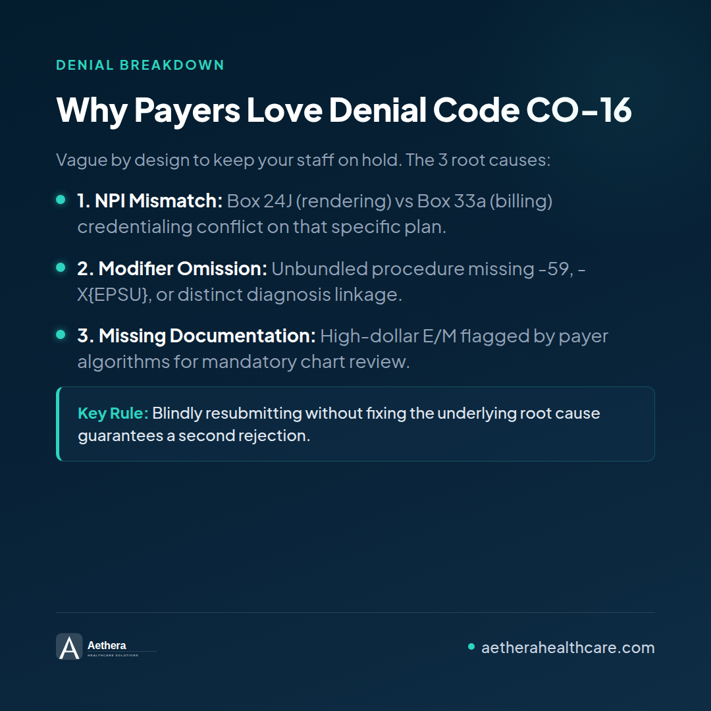
Tuesday: Why Payers Love Denial Code CO-16 (Denial Teardown)
Why Payers Love Denial Code CO-16 👇
CO-16 ("Claim/service lacks information or has submission/billing error") is the favorite delay tactic of commercial payers.
Why? Because it’s vague by design. It forces your billing staff to spend 45 minutes on hold just to find out what was actually missing.
9 times out of 10, the issue boils down to one of these three:
1. NPI Discrepancy: Billing NPI (Box 33a) vs. Rendering NPI (Box 24J) credentialed under conflicting taxonomies with that specific plan.
2. Modifier Omission: Unbundled procedure missing an anatomical or distinct-procedural modifier (like -59 or -XE/-XP).
3. Missing Clinical Records: High-dollar E/M or surgical procedures flagged by payer automated edits for mandatory chart audit.
Key rule: Blindly resubmitting CO-16 claims without fixing the root cause guarantees a second denial and burns through your timely filing window.
What’s the single most common denial code hitting your clearinghouse this week?
#MedicalCoding #DenialManagement #RCM #HealthcareBilling #HealthTech
Cardiology billing has zero margin for sloppy modifier usage.
Take a routine stress echocardiogram (93351) paired with an established patient visit (99214).
If a patient presents for scheduled cardiac testing and the cardiologist ALSO evaluates worsening chest pain or adjusts medication:
• Without Modifier 25 on the 99214: Payer auto-bundles the office visit into the echo. The practice loses $110+ in clean reimbursement.
• Using Modifier 25 without distinct documentation: Payer algorithms flag it for pre-payment chart review or post-pay clawback 6 months down the road.
• Missing Component Splits (TC / 26): Billing global diagnostic codes in facility or hospital settings triggers instant rejection.
Cardiology revenue doesn’t leak because physicians aren’t seeing enough patients.
It leaks because generalist billers don't know specialty-specific NCCI edits. Specialty billing requires specialty eyes.
#CardiologyBilling #MedicalBilling #SpecialtyBilling #PhysicianPractice #Cardiology
✓ Scheduled in Buffer
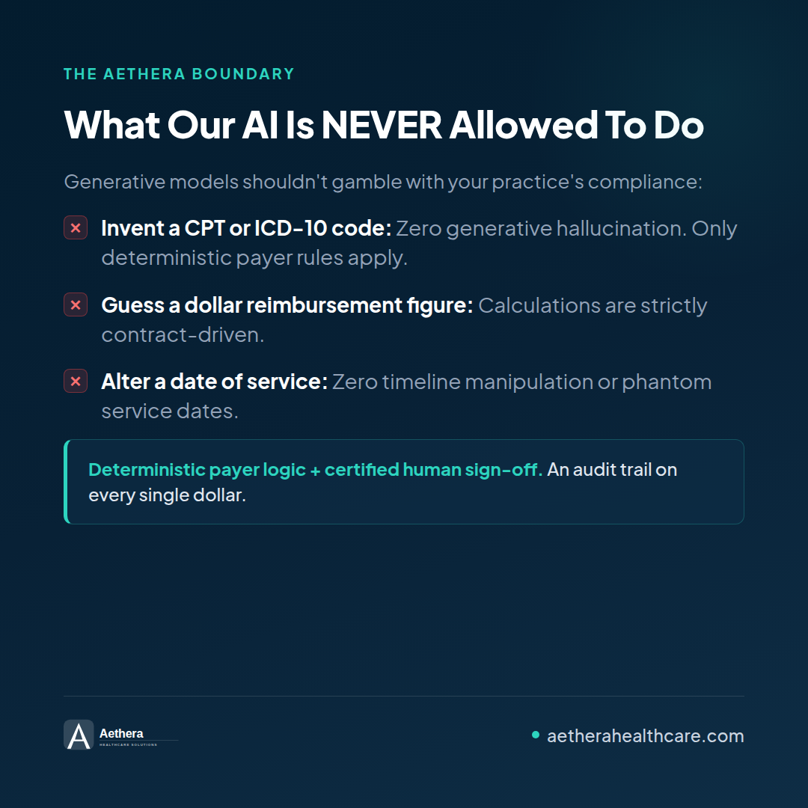
Thursday: What Our AI Is NEVER Allowed To Do (The AI Boundary)
If a software vendor tells you their AI "fully automates medical coding with zero human review," call your compliance officer.
Large language models are phenomenal at parsing messy clinical notes and summarizing history.
But generative AI hallucinating a single CPT code or date of service is how practices end up with OIG audits, upcoding penalties, and canceled payer contracts.
At Aethera, we draw a hard architectural line:
❌ AI is NEVER permitted to invent a CPT or ICD-10 code.
❌ AI is NEVER permitted to guess a dollar reimbursement figure.
❌ AI is NEVER permitted to alter a date of service.
Instead:
✅ Deterministic rules engines cross-reference against live CMS and payer contracts.
✅ Certified AAPC/AHIMA coders review and approve every chart.
✅ Every action is locked into a tamper-evident audit trail.
Efficiency is good. But in healthcare finance, audit-defense is non-negotiable.
#HealthTech #ArtificialIntelligence #Compliance #MedicalCoding #HealthcareSecurity
✓ Scheduled in Buffer
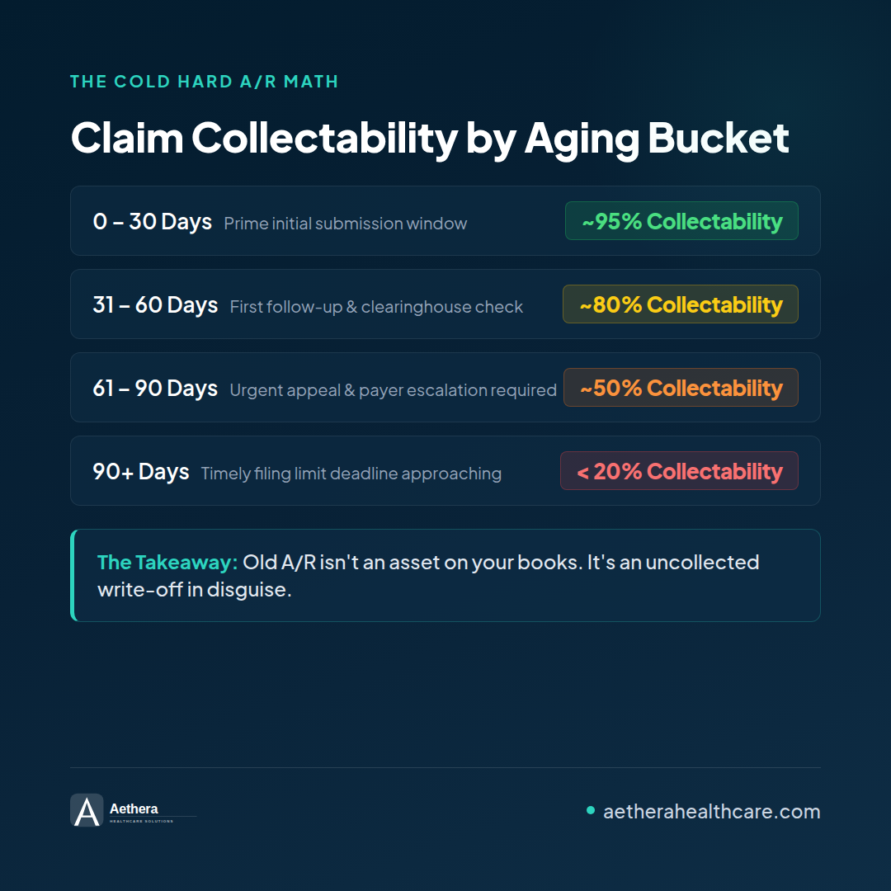
Friday: Claim Collectability by Aging Bucket (The Cold Hard Math)
The brutal depreciation curve of medical claims:
💵 0–30 Days: ~95% collectability (Prime submission window)
📉 31–60 Days: ~80% collectability (First follow-up milestone)
📉 61–90 Days: ~50% collectability (Urgent payer escalation required)
🛑 90+ Days: < 20% collectability (Timely filing cliff)
Every week an unpaid claim sits in an unworked queue, your probability of collecting drops off a cliff.
And yet, most practice dashboards lump all A/R together under one general average number.
If you want an honest diagnostic of your practice's financial health this Friday, check one number:
What percentage of your total A/R is over 90 days?
If that figure is higher than 15%, you don't just have slow payers—you have uncollected write-offs accumulating on your books.
(Curious where your practice stands? Benchmark your denial leakage with a free 50-claim pilot review at aetherahealthcare.com/free-assessment).
#HealthcareFinance #PracticeManagement #MedicalBilling #CashFlow #PhysicianLeadership
✓ Scheduled in Buffer
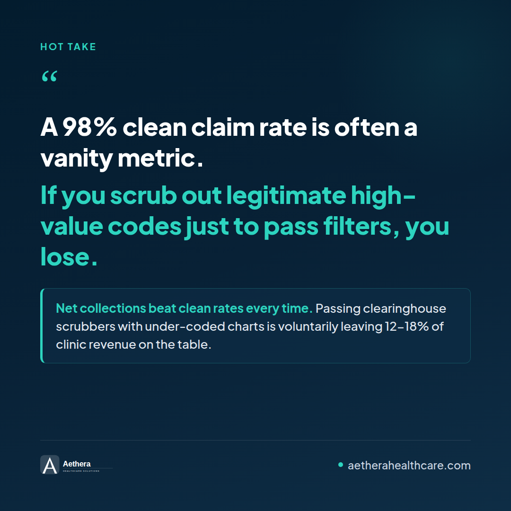
Week 2, Mon: Clean Claim Rate is a Vanity Metric
A 98% clean claim rate is often a vanity metric.
Here’s the dirty secret of medical billing:
Anyone can achieve a 99% clean claim rate if they undercode their charts and strip out complex modifiers. Clearinghouse scrubbers will pass them with flying colors.
The claim gets paid in 14 days. Everyone celebrates.
Meanwhile, the practice just lost $45,000 this month in legitimate reimbursement for:
• Unbilled distinct procedural services (-59 / -X{EPSU})
• Routine office visits bundled into minor procedures (-25)
• Time-based prolonged service add-on codes
Payer scrubbers are designed to reward safe, undercoded submissions.
Don't optimize for clearinghouse speed. Optimize for clean, accurate net collections.
#RevenueCycleManagement #MedicalBilling #HealthcareFinance #PracticeManagement
✓ Scheduled in Buffer
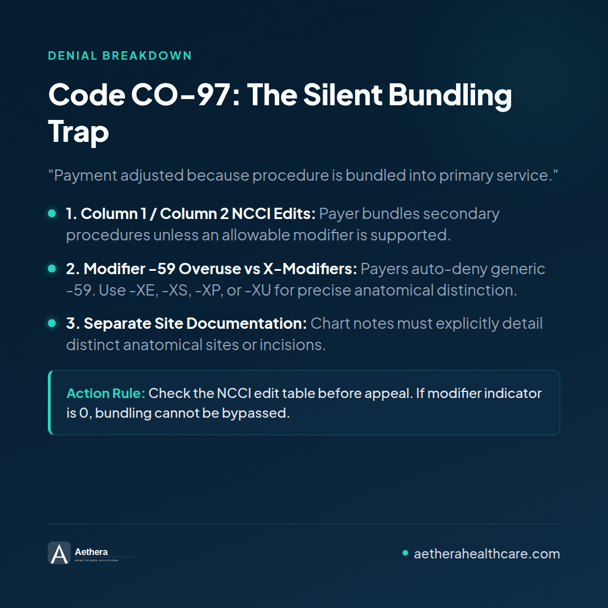
Week 2, Tue: Denial Code CO-97 (The Bundling Trap)
Denial Code CO-97: The Payer's Favorite Cost-Cutting Edit 👇
CO-97 reads: "The benefit for this service is included in the payment/allowance for another service/procedure that has already been adjudicated."
Translation: "We bundled your second procedure into the first one and paid you $0 for it."
3 steps to overturn CO-97 denials:
1. Check the CMS NCCI Edit Indicator:
• Indicator 0 = Cannot be unbundled under any circumstances. (Do not waste time appealing).
• Indicator 1 = Unbundling allowed IF distinct clinical documentation supports it.
2. Stop using generic Modifier 59:
Commercial payers now use AI filters targeting modifier 59. Switch to Medicare's specific X-modifiers:
• -XE (Separate Encounter)
• -XS (Separate Structure)
• -XP (Separate Practitioner)
• -XU (Unusual Non-Overlapping Service)
3. Quote the Payer's Own Fee Schedule in the Appeal Letter:
Attach the operative report with the distinct anatomical incision highlighted.
What percentage of your surgical secondaries get hit with CO-97?
#MedicalCoding #DenialManagement #RCM #HealthcareBilling #NCCI
✓ Scheduled in Buffer
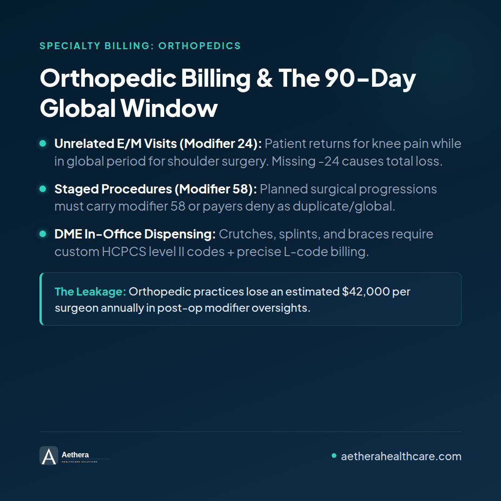
Week 2, Wed: Orthopedic Billing (The 90-Day Global Window)
The 90-day global surgical period is where orthopedic practices lose tens of thousands in unbilled revenue.
Here's the common scenario:
A patient has knee surgery on March 1. The 90-day global period runs through May 30.
On April 15, the patient visits the clinic for acute wrist pain after a fall. The surgeon evaluates the wrist, orders X-rays, and prescribes treatment.
What happens at 80% of billing offices?
The billing team sees a post-op encounter, assumes it's bundled in the global package, and enters $0 charge or fails to attach Modifier 24.
• Proper Coding: 99214 with Modifier 24 (Unrelated E/M during post-op) + wrist ICD-10 diagnosis linked.
• Without -24: Auto-denial as global period.
• Result: $135 lost on a routine visit.
Multiply that by 3–5 patients a week across a 4-surgeon practice, and you're forfeiting $35,000 to $50,000 every single year.
Does your billing team audit orthopedic post-op encounters weekly?
#OrthopedicBilling #SurgeryBilling #MedicalBilling #PhysicianFinance #Orthopedics
✓ Scheduled in Buffer
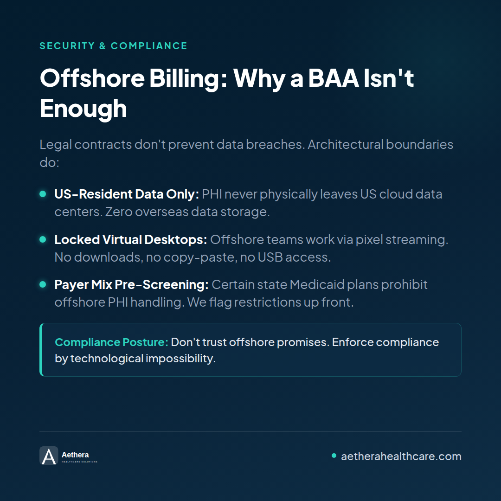
Week 2, Thu: Virtual Desktops vs Offshore BPOs
Most healthcare providers don't realize this about their offshore billing vendor:
A signed Business Associate Agreement (BAA) is a legal document. It is NOT technical security.
If your offshore vendor has billers working from personal laptops or downloading patient spreadsheets locally, your practice is one compromised USB drive away from an OCR HIPAA investigation.
Here is how offshore RCM should actually be structured:
1. Data Sovereignty:
All patient data (EHR, claims, 835 remittances) resides exclusively on encrypted US servers. It NEVER downloads overseas.
2. Locked-Down Virtual Desktop Infrastructure (VDI):
Overseas specialists interact with applications through encrypted pixel streams.
• Local drive mapping: DISABLED
• Clipboard / copy-paste: DISABLED
• USB mass storage: BLOCKED
• Screen capture tools: DISABLED
3. State & Payer Regulatory Screening:
Many state Medicaid programs and Medicare Advantage contracts prohibit offshore PHI handling entirely. If your vendor doesn't screen your payer mix before taking claims, you are non-compliant.
Technology enforces what contracts only promise.
#HIPAA #HealthTech #Cybersecurity #MedicalBilling #Compliance
✓ Scheduled in Buffer
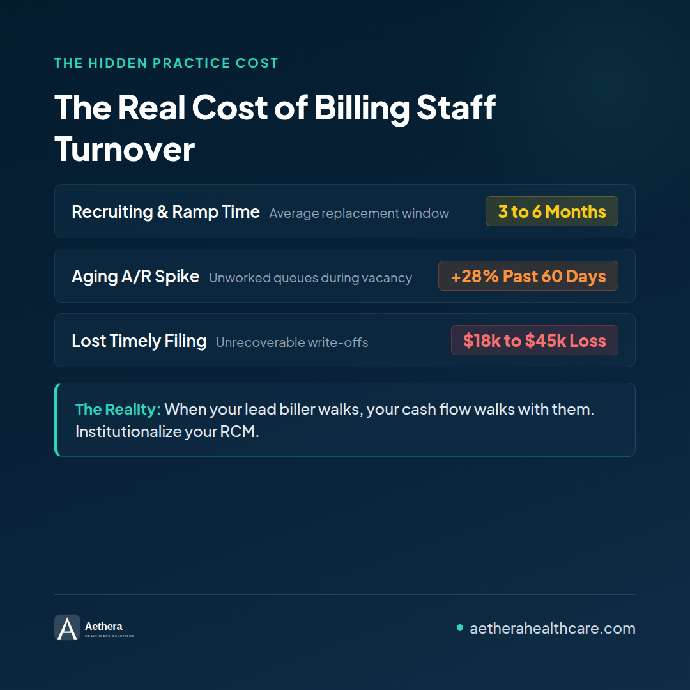
Week 2, Fri: The True Cost of Billing Staff Turnover
Medical billing staff turnover is the silent killer of independent clinic profitability.
When your lead biller or coding specialist resigns, the math is brutal:
1. The Recruitment Lag:
It takes an average of 45–90 days to hire and credential an experienced medical biller who understands your specific EHR and specialty nuances.
2. The 60+ A/R Surge:
While that desk sits empty, nobody works denials. Clearinghouse rejections pile up. Within 8 weeks, your 60+ day aging A/R surges by an average of 28%.
3. Timely Filing Write-Offs:
By the time the new hire gets trained, commercial payer 90-day appeal deadlines have expired on hundreds of claims. That revenue is unrecoverable.
Average financial damage per billing turnover event: $35,000 to $70,000 in delayed and lost cash flow.
If your revenue cycle depends entirely on two key people showing up on Monday, you don't have a system. You have a single point of failure.
#HealthcareFinance #PracticeManagement #MedicalBilling #PhysicianLeadership
Queued (Auto-Replenish)
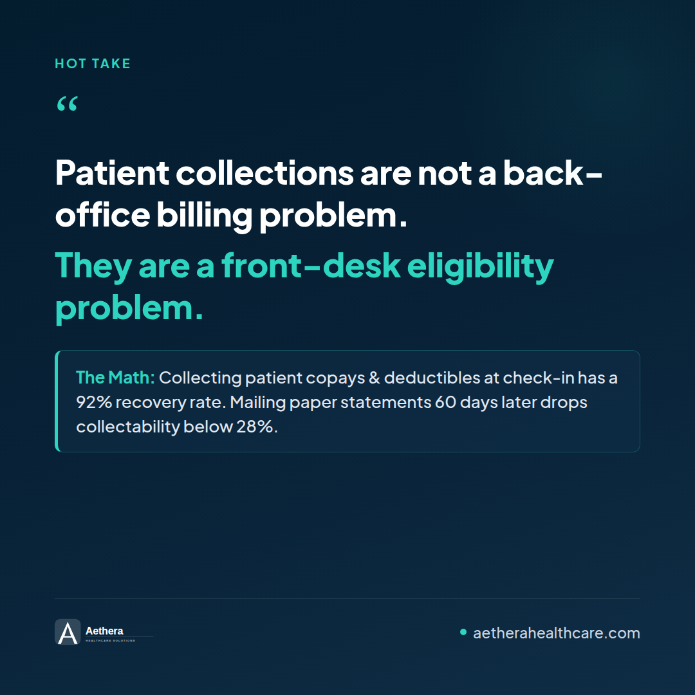
Week 3, Mon: Patient Collections Start at the Front Desk
Stop expecting your billing department to fix your patient collections problem.
Here is the cold reality of high-deductible health plans:
• Collecting at check-in: ~92% collection rate.
• Mailing a paper statement 30 days later: ~45% collection rate.
• Mailing a second statement at 60 days: ~28% collection rate.
• Sending to collections agency at 120 days: ~10% (minus 35% agency fee).
If your front desk is not verifying real-time eligibility (EDI 270/271) before the patient walks into the exam room, you are guaranteeing bad debt.
3 rules for front-desk collection success:
1. Run automated batch eligibility 48 hours prior to every appointment.
2. Present clear deductible & copay estimates at check-in.
3. Keep a secure credit card on file for balances up to $150.
Fix the intake, and your A/R days drop immediately.
#PatientBilling #HealthcareFinance #PracticeManagement #MedicalBilling
Denial Code PR-204: When "Active Insurance" Still Means $0 Payment 👇
PR-204 reads: "This service/equipment/drug is not covered under the patient's current benefit plan."
Why this happens to good practices:
Your staff checks the insurance card. The policy is active. They assume everything is fine.
Then the claim denies under PR-204 because:
1. The specific CPT code is excluded under that employer group's policy rider (e.g. bariatric surgery, certain pain injections, genetic panels).
2. The service required a prior auth that was never obtained, so the payer retroactively terms coverage for that encounter.
3. The provider is out-of-network for that narrow tiered network.
And because it’s a "PR" (Patient Responsibility) code, the payer says the patient owes the full bill.
If you didn't obtain a signed Advance Beneficiary Notice (ABN) or financial waiver beforehand, the patient refuses to pay and files a grievance.
Real-time eligibility checking must be procedure-specific, not just "active/inactive."
#DenialManagement #MedicalCoding #HealthcareFinance #PracticeManagement
Queued (Auto-Replenish)
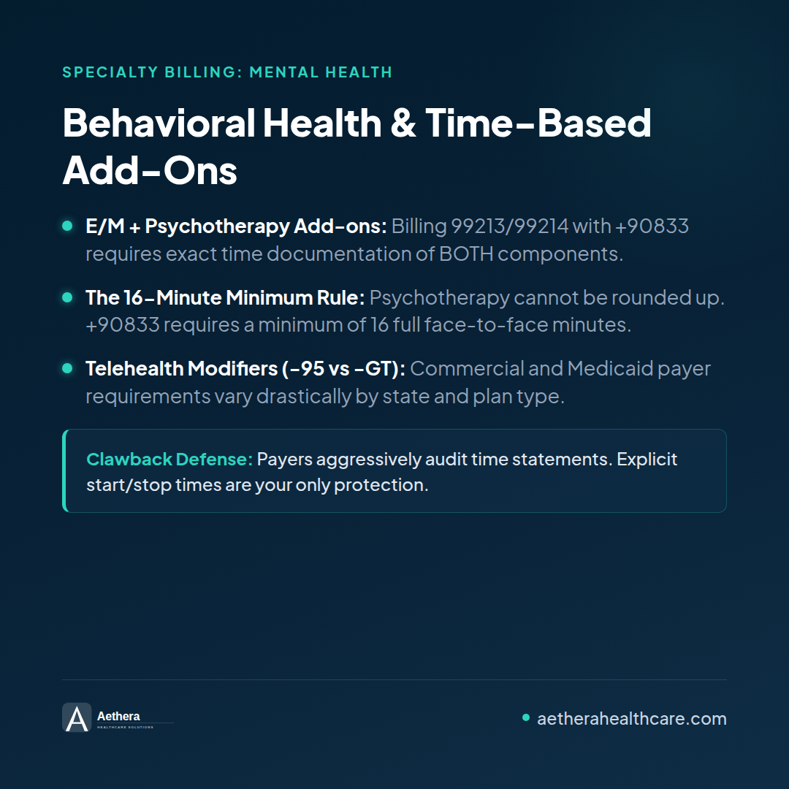
Week 3, Wed: Behavioral Health Billing (+90833 Traps)
Psychiatry and behavioral health practices are facing record post-payment audits over one code: +90833.
When a psychiatrist provides medication management (E/M 99213 or 99214) AND psychotherapy (+90833 add-on):
Payer scrutiny is relentless. Here are the 3 traps triggering recoupment demands:
1. Missing Time Documentation:
You cannot write "discussed therapy for 30 minutes." You must document the exact time spent on psychotherapy EXCLUSIVE of the E/M medical decision-making time.
2. Failing the CPT Time Thresholds:
• Code +90833 represents 30 minutes of psychotherapy.
• CPT rules require a minimum of 16 minutes. If your session was 14 minutes, you cannot bill it.
3. Separate Note Sections:
The medical note must have distinct headers:
• Psychiatric Medical Management (symptoms, medications, side effects)
• Psychotherapy (modality used, patient response, coping mechanisms)
Without distinct sections, payer algorithms bundle the entire visit into a basic E/M and claw back the therapy reimbursement.
#BehavioralHealth #PsychiatryBilling #MedicalCoding #MentalHealthOps
Queued (Auto-Replenish)
Week 3, Thu: Tamper-Evident Audit Trails in RCM
When an insurance payer or CMS auditor sends an audit request for 50 charts from two years ago, how long does it take your team to answer?
For most practices, it’s a 3-week archaeology project:
• Searching through old clearinghouse logins
• Digging through shared Excel spreadsheets
• Wondering who adjusted that modifier and why
This is why Aethera was built on tamper-evident, hash-chained audit trails.
Every single action in our revenue cycle engine:
• Who touched the claim (certified coder, automated rule, manager)
• What exact rule was evaluated
• The timestamp down to the second
• The raw source data (EDI 837 submission and 835 remittance)
...is cryptographically chained.
You cannot alter it. You cannot backdate it. And when an auditor asks "Why was this code billed this way?", the documentation packet is generated in 10 seconds.
Compliance isn't about being scared of audits. It's about being ready for them.
#HealthTech #Compliance #HealthcareArchitecture #MedicalBilling #AuditReadiness
Queued (Auto-Replenish)
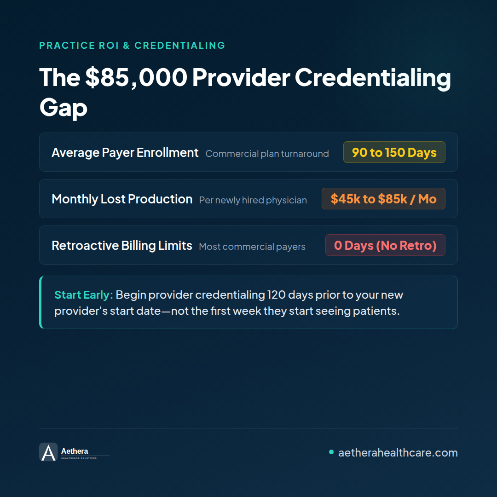
Week 3, Fri: The $85,000 Credentialing Gap
Hiring a new physician is exciting.
Waiting 5 months for commercial payers to credential them is a financial catastrophe.
Here is the expensive math clinic owners face:
A new full-time provider generates roughly $50,000 to $90,000 in monthly charges.
If you submit credentialing applications when the doctor starts their first day:
• Medicare takes 45–90 days.
• Commercial payers (BCBS, Aetna, United, Cigna) take 90–150 days.
Unlike Medicare, most commercial health plans DO NOT allow retroactive billing before the effective approval date.
That means every patient with commercial insurance seen during those 3–5 months must either:
1. Be billed out-of-network (massive patient dissatisfaction and unpaid balances)
2. Be written off entirely
Total unrecoverable cost: $80,000 to $150,000 per provider.
Credentialing isn't paperwork. It's revenue enablement. Begin enrollment 120 days before day one.
#ProviderCredentialing #HealthcareManagement #PhysicianRecruitment #PracticeFinance
Queued (Auto-Replenish)
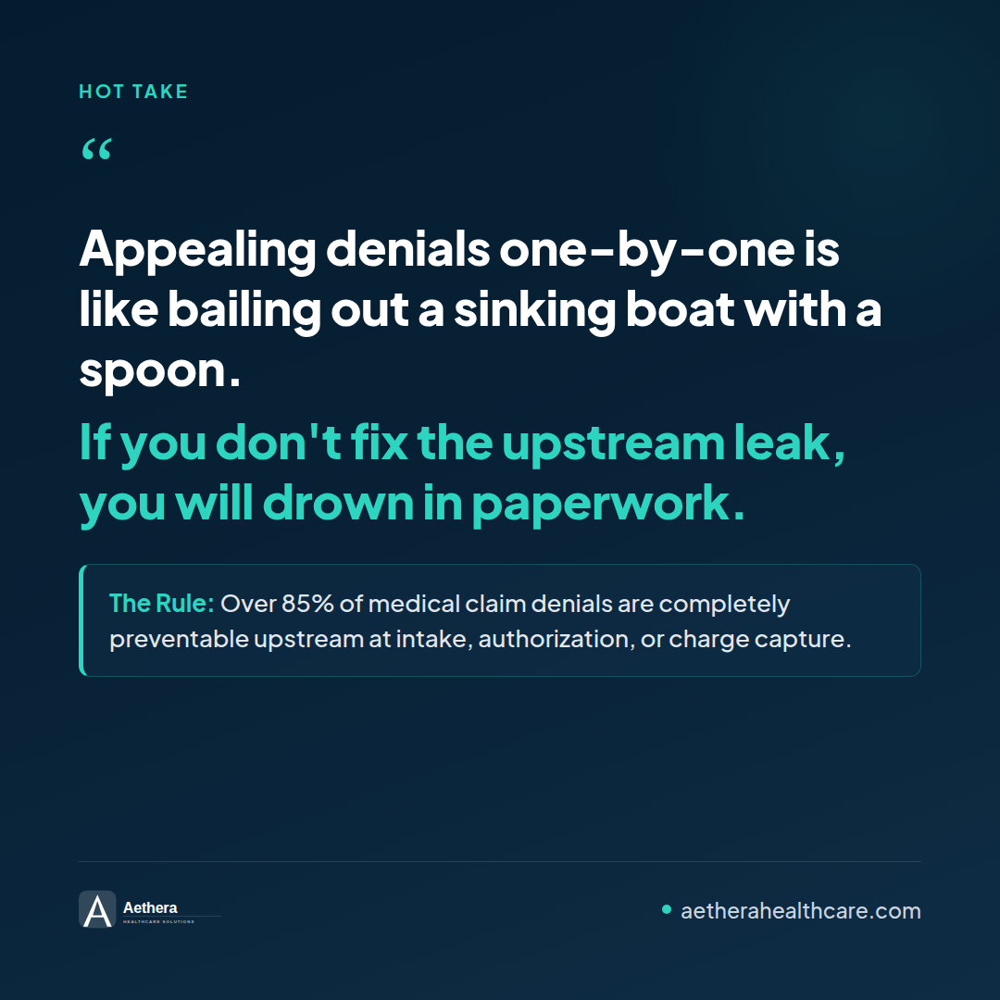
Week 4, Mon: Stop Appealing Denials One-by-One
Most medical billing companies boast about how many denial appeals they write each month.
At Aethera, we think that's backwards.
Appealing denials one by one is like bailing water out of a sinking boat with a spoon. You feel busy, but you're exhausting your staff while the water keeps rushing in.
85% of claim denials are completely preventable:
• Missing prior authorization numbers
• Demographic typos from manual intake
• Mismatched rendering NPIs
• Unchecked NCCI bundling edits
The goal of modern RCM isn't to become the fastest appeal writer in healthcare.
The goal is to analyze your 835 remittance data, group recurring CARC denial codes by root cause, and reconfigure your pre-bill claim scrubbers so the error NEVER happens again.
Prevent upstream. Don't fight downstream.
#RevenueCycleManagement #DenialPrevention #MedicalBilling #HealthOps
Denial Code CO-4: When Modifiers Backfire 👇
CO-4 indicates: "The procedure code is inconsistent with the modifier used or a required modifier is missing."
It is one of the most frustrating rejections because clearinghouses often miss it, and payers bounce it straight back.
The 3 most common modifier mistakes causing CO-4:
1. Attaching Modifier 25 to the Wrong Code:
Modifier 25 belongs exclusively on the Evaluation & Management code (99202–99215). Attaching it to the minor procedure or injection code triggers an instant CO-4 reject.
2. Bilateral Procedure Coding Confusion:
Medicare requires Modifier 50 on a single line with 1 unit.
Commercial payers like UnitedHealthcare and Aetna frequently reject -50 and demand two line items:
• Line 1: CPT with -RT
• Line 2: CPT with -LT
3. Anatomical Modifiers on Non-Anatomical Procedures:
Appending -E1/-E2 (eyelids) or -F1/-F2 (fingers) to general evaluation codes.
Payer modifier preferences differ wildly. Deterministic rule engines that know each payer's claim edits prevent CO-4 entirely.
#MedicalCoding #DenialManagement #MedicalBilling #RCM
Queued (Auto-Replenish)
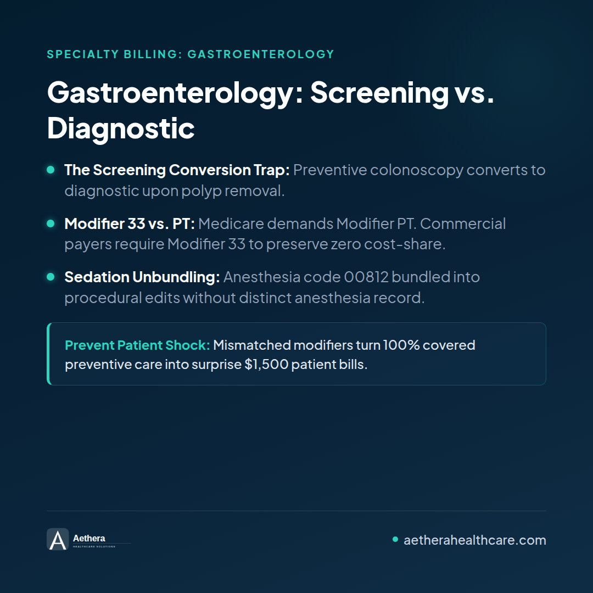
Week 4, Wed: GI Billing (Screening vs Diagnostic Colonoscopy)
Gastroenterology billing has a notorious trap that infuriates patients and generates compliance complaints:
The Screening-to-Diagnostic Colonoscopy conversion.
Under the ACA, preventive screening colonoscopies must be covered at 100% with $0 patient cost-sharing.
But when the gastroenterologist detects and removes a benign polyp during the exam:
The procedure becomes diagnostic.
If your biller drops the claim without the correct preventive modifier:
• Payer applies the visit to the patient's deductible.
• Patient receives a surprise $1,200 bill for a "free" screening.
• Patient calls the clinic screaming; reviews plummet online.
The proper coding protocol:
• Medicare: Report CPT 45385 with Modifier PT.
• Commercial Plans: Report CPT 45385 with Modifier 33.
• Primary Diagnosis: Keep Z12.11 (screening) as primary, with the polyp finding (K63.5 or D12.x) secondary.
Specialty rules protect both your reimbursement and your patient relationships.
#Gastroenterology #GIBilling #MedicalCoding #PreventiveCare
Most medical practices believe billing rules are updated once a year on January 1st when CPT changes roll out.
In reality, payer reimbursement rules change constantly:
• CMS updates NCCI edit tables every quarter (thousands of code pairing modifications).
• Commercial payers publish monthly policy bulletins altering medical necessity requirements.
• Prior authorization lists expand silently mid-year.
If your billing team or practice management software only updates rules once a year, you are submitting claims based on obsolete guidelines for 9 months out of 12.
At Aethera, our rules engine continuously tracks payer policy changes:
• Pre-bill validation against current NCCI versions
• Commercial medical policy cross-referencing
• Specialty-specific coverage indicators
You shouldn't find out a payer changed their bundling rule from an Explanation of Benefits showing a $0 reimbursement.
#HealthTech #RevenueCycle #MedicalBilling #HealthOps
Queued (Auto-Replenish)
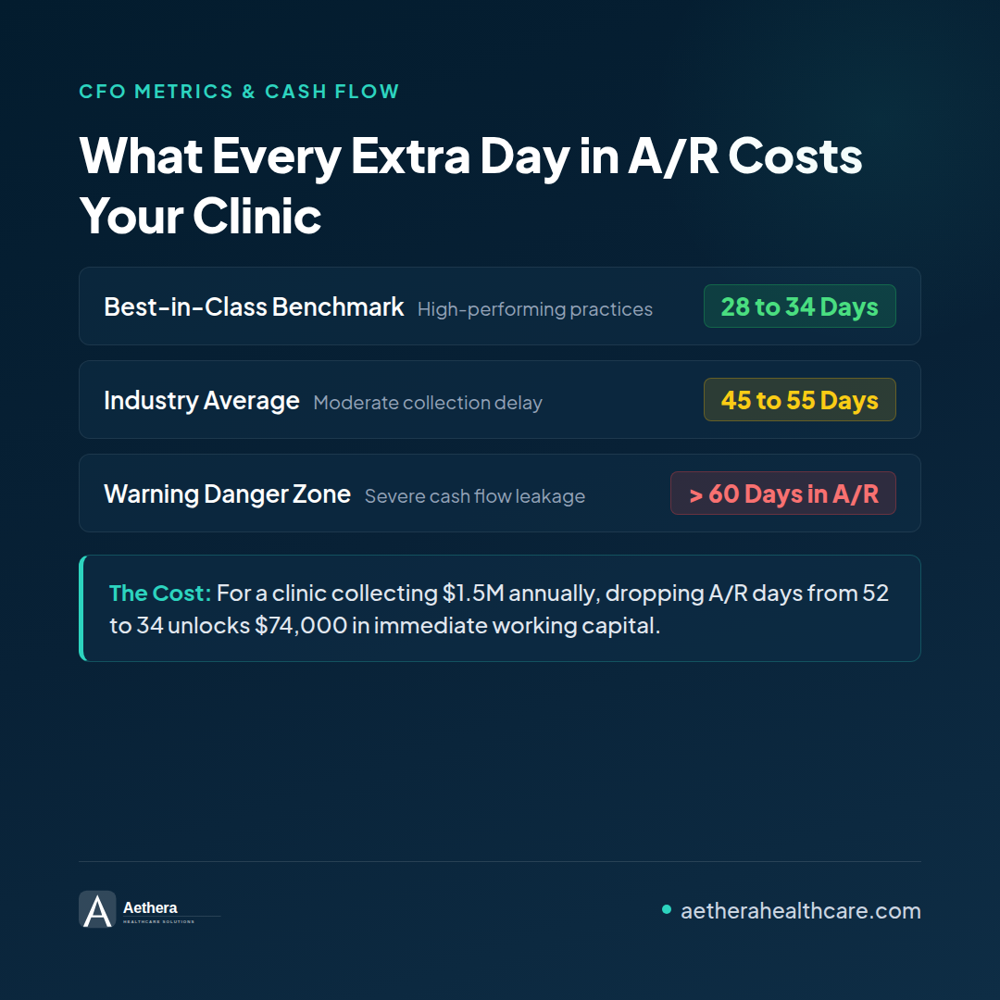
Week 4, Fri: What Every Extra Day in A/R Costs You
How many days does it take for your practice to get paid?
"Days in A/R" is the single clearest thermometer of your clinic’s operational health:
Formula: Total Current A/R ÷ (Annual Gross Charges ÷ 365)
• Under 35 Days: Best-in-class. Clean claims, tight eligibility, immediate denial rework.
• 36–50 Days: Average. Slower commercial payers, mild collection lag.
• 51+ Days: Danger zone. Unworked claims, backlogged appeals, high risk of timely filing write-offs.
Here is the real business impact:
For a 3-physician practice collecting $1.5M per year:
Reducing Days in A/R from 52 days down to 34 days doesn't just improve efficiency—it injects $74,000 in liquid working capital directly back into your bank account.
Stop letting insurance payers hold your cash interest-free.
(Want to benchmark your practice's Days in A/R and denial leakage? Message us for a free 50-claim pilot assessment).
#HealthcareFinance #PracticeManagement #MedicalBilling #CashFlow #PhysicianLeadership
Queued (Auto-Replenish)
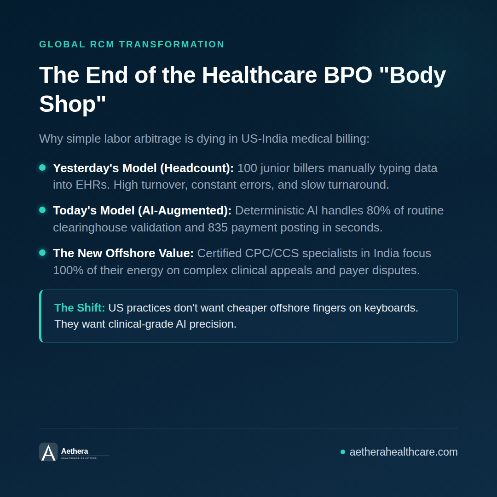
Global AI-RCM: The End of the Offshore 'Body Shop'
The days of US healthcare outsourcing being about "cheap headcount in India" are officially over.
For twenty years, the traditional RCM BPO playbook was simple:
Hire 200 people overseas, pay lower wages, and have them manually key claims, verify insurance websites, and dial payer call centers.
Today, that model is collapsing:
• Commercial payer algorithms reject repetitive manual claims in milliseconds.
• US compliance officers are terrified of unvetted overseas workers handling sensitive PHI on local machines.
• High turnover at legacy BPOs causes severe collection dips every 6 months.
Here is what the AI-first US-India revenue cycle actually looks like:
1. Autonomous Base Operations:
Deterministic AI engines handle 80% of repetitive data pipelines—eligibility verification (EDI 270/271), payment reconciliation (EDI 835), and NCCI bundling checks.
2. Upskilled Global Intelligence:
Instead of hundreds of low-paid data-entry clerks, our teams in Chennai, India are certified medical coders (AAPC/AHIMA) and clinical appeal specialists.
3. High-Value Human Intervention:
Humans only touch the high-complexity 20%: drafting clinical medical-necessity appeals, resolving payer contract discrepancies, and managing complex surgical reviews.
The winning formula isn't labor arbitrage. It's intelligence augmentation.
#HealthTech #RevenueCycleManagement #MedicalBilling #HealthcareAI #GlobalHealthcare
Queued (Auto-Replenish)
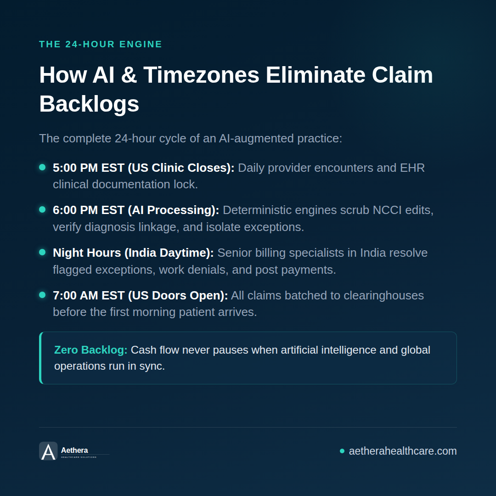
The 24-Hour AI Engine: How US-India Timezones Crush Backlogs
Why the US-India timezone split, powered by AI, is the single greatest operational advantage in medical billing:
Most US-only billing teams work 8:00 AM to 5:00 PM.
When physicians finish charts at the end of the day, those encounters sit untouched until the following afternoon or weekend. Claims age before they even reach the clearinghouse.
Here is the 24-hour AI-augmented workflow:
📍 5:00 PM EST (US Clinic Closes)
Physicians finalize their clinical notes. The daily encounter batch locks in the EHR.
📍 6:00 PM EST (AI Ingestion & Scrubbing)
Our software engine ingests the charts, cross-references payer-specific medical policies, checks NCCI column 1/2 bundling, and sorts clean claims from complex exceptions.
📍 9:00 PM EST / 6:30 AM IST (India Operations Active)
While America sleeps, our Chennai delivery center steps in:
• Certified coders review AI-flagged modifier exceptions
• Denial specialists draft appeals against morning remit files
• Payment posters reconcile overnight 835 electronic funds transfers
📍 7:00 AM EST (US Clinic Reopens)
Before the clinic manager takes their first sip of coffee, yesterday's encounters are 100% scrubbed, audited, and transmitted to clearinghouses. Zero daytime backlog.
That isn't outsourcing. That's a 24-hour revenue engine.
#MedicalBilling #RCM #HealthOps #HealthTech #GlobalBusiness
Queued (Auto-Replenish)
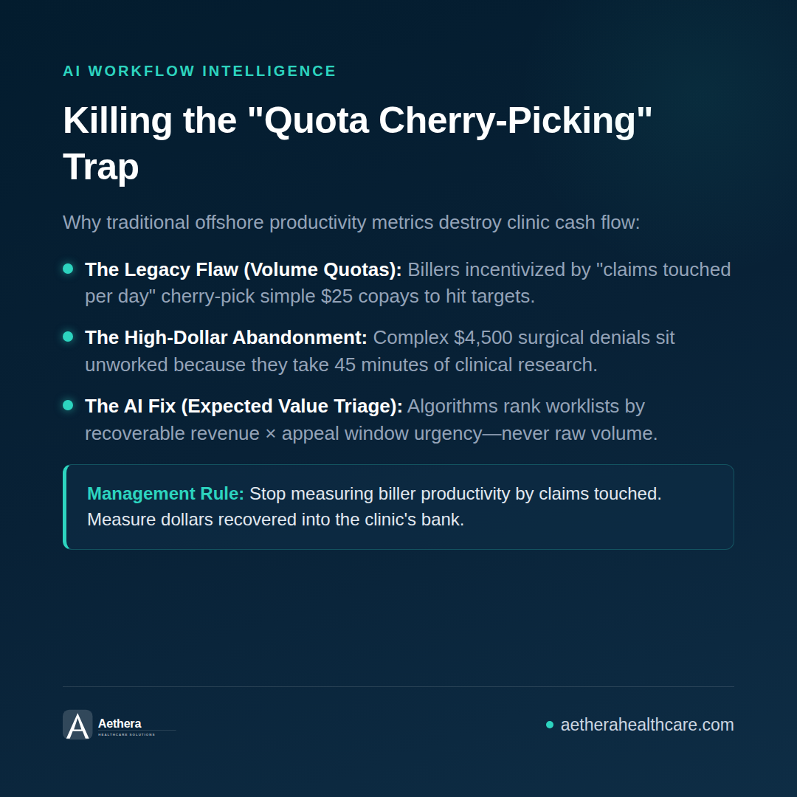
Stopping Quota Cherry-Picking: AI Denial Workflows
If you manage or work with an offshore billing company, you need to know about "The Cherry-Picking Trap":
In 90% of healthcare BPOs, biller performance is evaluated on one metric:
"Number of claims worked per day." (Usually 40 to 60 claims).
Here is human nature in action:
If a biller is forced to hit 50 claims by 5:00 PM, which claims do they open?
They pick simple, easy rejections:
• A $20 missing copay
• A patient demographic typo
• An easily resubmitted lab test
Meanwhile, what happens to the complex $4,800 orthopedic surgical denial that requires pulling 6 pages of operative notes and writing an NCCI clinical appeal?
It gets pushed to the bottom of the worklist. Day after day.
Before anyone notices, the payer's 90-day timely filing deadline expires. The practice writes off $4,800, but the billing report says "Productivity: 100%!"
How AI stops this:
Our software eliminates human discretion from worklist selection. Claims are dynamically assigned based on Expected Recoverable Value and Appeal Deadline Urgency.
High-dollar claims are routed immediately to senior specialists. Routine errors are automated.
Measure dollars recovered—never claims touched.
#RevenueCycle #DenialManagement #HealthcareOperations #PracticeFinance
Queued (Auto-Replenish)
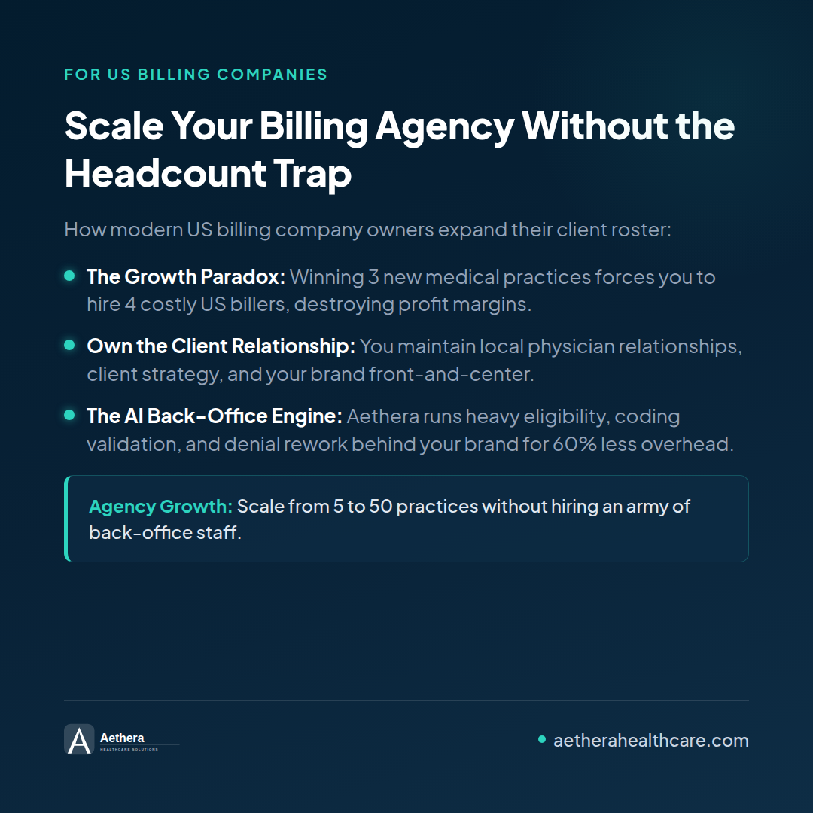
White-Label AI: How US Billing Companies Scale Without Headcount
To every independent medical billing company owner in the US:
You are probably caught in the Billing Agency Growth Trap.
It looks like this:
1. You work hard and sign 3 new multi-specialty practices.
2. Suddenly, your current staff is overwhelmed.
3. You have to hire 4 new experienced US billers at $55k–$70k/year each, plus benefits.
4. Two months in, one resigns, another makes costly modifier mistakes, and your profit margins on the new accounts shrink to near-zero.
Winning new business shouldn't punish your profitability.
This is why leading US billing agencies are partnering with Aethera as their white-label back office:
• You own the client relationship: Your logo, your executive meetings, your trust with local doctors.
• We run the engine: Our AI infrastructure and certified India back-office team handle real-time eligibility checks, payment posting, scrubbing, and tedious denial appeals.
• Predictable margins: Your back-office operational costs drop by 50% to 65%, with zero staffing headaches.
Focus on sales and physician relationships. Let institutional infrastructure power the back office.
(Want to see how our white-label partnership works? Visit aetherahealthcare.com/for-billing-companies).
#MedicalBilling #BillingCompanies #RCM #HealthcareEntrepreneur #AgencyGrowth
Queued (Auto-Replenish)
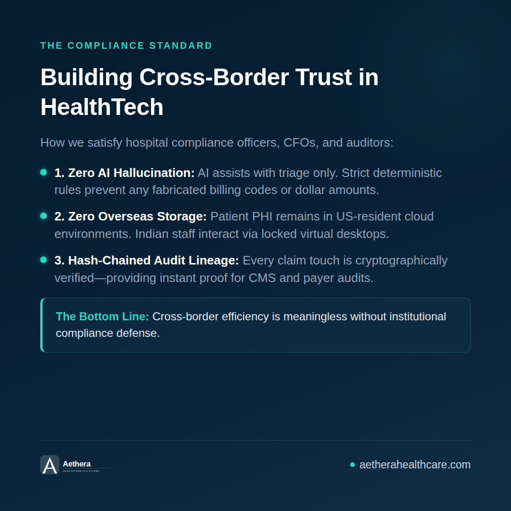
Cross-Border Trust: The AI Boundary That US Compliance Demands
Healthcare compliance officers in the US have two completely valid fears right now:
1. Generative AI hallucinating medical codes and triggering Medicare fraud audits.
2. Offshore vendors losing control of patient Protected Health Information (PHI).
If you are a US clinic CFO, you should be asking tough questions when vendors claim they use "AI" or "Global Delivery."
At Aethera, we built our architecture to turn compliance from a liability into our greatest competitive advantage:
🛡️ 1. The Hard Boundary on AI:
Our artificial intelligence is architecturally forbidden from guessing a CPT code, altering a dollar amount, or inventing a service date. Deterministic rules cross-reference real payer policies; certified human experts approve every financial action.
🛡️ 2. Zero Overseas Downloads:
Our global specialists in Chennai work through locked-down Virtual Desktop Infrastructure (VDI). Patient records never leave US data centers. Local downloads, USB storage, and clipboard exports are blocked by code.
🛡️ 3. Cryptographic Audit Trails:
Every eligibility check, code recommendation, and appeal letter is logged into a tamper-evident, hash-chained ledger. When payers audit, we produce indisputable source lineage in seconds.
Global efficiency only wins when institutional trust is unshakeable.
#HealthTech #Compliance #HIPAA #HealthData #HealthcareLeadership